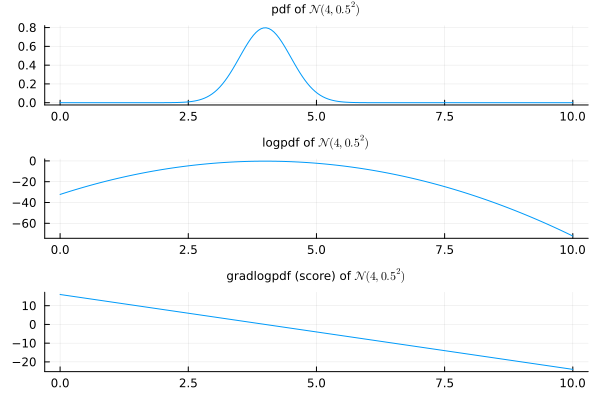
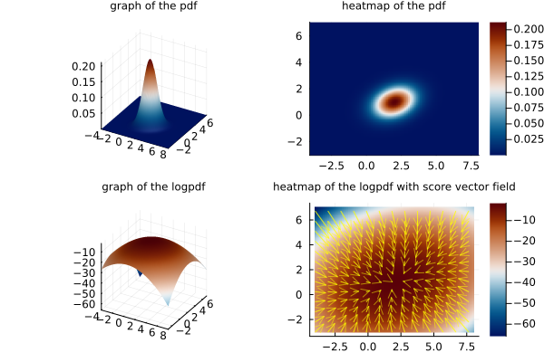

Stein score function
Aim
Revisit the origin of the Stein score function, which is the basis of score-based generative models.
The Stein score function
Given a random variable $\mathbf{X}$ in $\mathbb{R}^d$, $d\in\mathbb{N},$ we denote its pdf by $p_{\mathbf{X}}(\mathbf{x})$, while its (Stein) score function, also known as gradlogpdf, is defined by
\[ \boldsymbol{\psi}_{\mathbf{X}}(\mathbf{x}) = \boldsymbol{\nabla}_{\mathbf{x}} \log p_{\mathbf{X}}(\mathbf{x}) = \frac{\boldsymbol{\partial}\log p_{\mathbf{X}}(\mathbf{x})}{\boldsymbol{\partial}\mathbf{x}} = \left( \frac{\partial}{\partial x_j} \log p_{\mathbf{X}}(\mathbf{x})\right)_{j=1, \ldots, d},\]
where we may use either notation $\boldsymbol{\nabla}_{\mathbf{x}}$ or ${\boldsymbol{\partial}}/{\boldsymbol{\partial}\mathbf{x}}$ for the gradient of a scalar function. (For the differential of a vector-valued function, we will use either $\mathrm{D}_{\mathbf{x}}$ or ${\boldsymbol{\partial}}/{\boldsymbol{\partial}\mathbf{x}}$.)
For a parametrized model with pdf denoted by $p(\mathbf{x}; \boldsymbol{\theta})$, or $p(\mathbf{x} | \boldsymbol{\theta})$, and parameters $\boldsymbol{\theta} = (\theta_1, \ldots, \theta_m),$ $m\in \mathbb{N}$, the score function becomes
\[ \boldsymbol{\psi}(\mathbf{x}; \boldsymbol{\theta}) = \boldsymbol{\nabla}_{\mathbf{x}} \log p(\mathbf{x}; \boldsymbol{\theta}) = \left( \frac{\partial}{\partial x_j} \log p(\mathbf{x}; \boldsymbol{\theta})\right)_{j=1, \ldots, d}.\]
In the univariate case, the score function is also univariate and is given by the derivative of the log of the pdf. For example, for a univariate Normal distribution $\mathcal{N}(\mu, \sigma^2)$, $\mu\in\mathbb{R}$, $\sigma > 0$, the pdf, logpdf and gradlogpdf are
\[ \begin{align*} p_X(x) & = \frac{1}{\sqrt{2\pi}\sigma}e^{-\frac{1}{2}\left(\frac{x - \mu}{\sigma}\right)^2}, \\ \log p_X(x) & = -\frac{1}{2}\left(\frac{x - \mu}{\sigma}\right)^2 - \log(\sqrt{2\pi}\sigma), \\ \psi_X(x) & = - \frac{x - \mu}{\sigma^2}. \end{align*}\]
Notice the score function in this case is just a linear function vanishing at the mean of the distribution and with the slope being minus the multiplicative inverse of its variance.
In the multivariate case, the score function is a vector field in the event space $\mathbb{R}^d$.
This notion of score function used in generative models in machine learning is different from the more classical notion of score in Statistics. The classical score function is defined for a parametrized model and refers to the gradient of the log-likelihood
\[ \ell(\boldsymbol{\theta}|\mathbf{x}) = \log\mathcal{L}(\boldsymbol{\theta}|\mathbf{x}) = \log p(\mathbf{x}|\boldsymbol{\theta}),\]
of a parametrized model, with respect to the parameters, i.e.
\[ s(\boldsymbol{\theta}; \mathbf{x}) = \boldsymbol{\nabla}_{\boldsymbol{\theta}}\log \mathcal{L}(\boldsymbol{\theta}|\mathbf{x}) = \frac{\boldsymbol{\partial}\log \mathcal{L}(\boldsymbol{\theta}|\mathbf{x})}{\boldsymbol{\partial}\boldsymbol{\theta}}.\]
This notion measures the sensitivity of the model with respect to changes in the parameters and is useful, for instance, in the maximization of the likelihood function when fitting a parametrized distribution to data.
The score function given by the gradlogpdf of a distribution is, on the other hand, useful for drawing samples via Langevin dynamics.
Stein divergence
Stein (1972) addressed a more general framework to estimate distances between distributions with the aim of approximating the sum of dependent random variables by a normal distribution, in a generalization of the Central Limit Theorem. In a particular case, as described in Liu, Lee, and Jordan (2016), this distance involves the Stein score function and reads as follows.
If $p=p(\mathbf{x})$ is a probability density function on $\mathbf{x}\in\mathbb{R}^d$, then, for any smooth scalar function $f(\mathbf{x})$ decaying sufficiently fast relative to $p(\mathbf{x})$,
\[ \begin{align*} \int_{\mathbb{R}^d} p(\mathbf{x})\left( \boldsymbol{\nabla}_{\mathbf{x}} \log p(\mathbf{x})f(\mathbf{x}) + \boldsymbol{\nabla}_{\mathbf{x}} f(\mathbf{x}) \right)\;\mathrm{d}\mathbf{x} & = \int_{\mathbb{R}^d} p(\mathbf{x})\left( \frac{\boldsymbol{\nabla}_{\mathbf{x}} p(\mathbf{x})}{p(\mathbf{x})} f(\mathbf{x}) + \boldsymbol{\nabla}_{\mathbf{x}} f(\mathbf{x}) \right)\;\mathrm{d}\mathbf{x} \\ & = \int_{\mathbb{R}^d} \left(\boldsymbol{\nabla}_{\mathbf{x}} p(\mathbf{x}) f(\mathbf{x}) + p(\mathbf{x})\boldsymbol{\nabla}_{\mathbf{x}} f(\mathbf{x}) \right)\;\mathrm{d}\mathbf{x} \\ & = \int_{\mathbb{R}^d} \boldsymbol{\nabla}_{\mathbf{x}} \left(p(\mathbf{x}) f(\mathbf{x})\right)\;\mathrm{d}\mathbf{x} \\ & = 0. \end{align*}\]
This is a particular case of the Stein identity. Now if $q=q(\mathbf{x})$ is another probability density function, then
\[ \begin{align*} \int_{\mathbb{R}^d} p(\mathbf{x})\left( \boldsymbol{\nabla}_{\mathbf{x}} \log q(\mathbf{x})f(\mathbf{x}) + \boldsymbol{\nabla}_{\mathbf{x}} f(\mathbf{x}) \right)\;\mathrm{d}\mathbf{x} & = \int_{\mathbb{R}^d} p(\mathbf{x})\boldsymbol{\nabla}_{\mathbf{x}} \log \left(q(\mathbf{x}) - p(\mathbf{x}) \right)f(\mathbf{x}) \;\mathrm{d}\mathbf{x}, \end{align*}\]
and we see that
\[ \int_{\mathbb{R}^d} p(\mathbf{x})\left( \boldsymbol{\nabla}_{\mathbf{x}} \log q(\mathbf{x})f(\mathbf{x}) + \boldsymbol{\nabla}_{\mathbf{x}} f(\mathbf{x}) \right)\;\mathrm{d}\mathbf{x} = 0, \;\forall f\in\mathcal{F}, \quad \textrm{if, and only if,} \quad q = p, \;\textrm{a.e.,}\]
where $\mathcal{F}$ is taken to be the class of function $f=f(\mathbf{x})$ which are smooth and decay relatively fast with respect to $p=p(\mathbf{x})$ (or, more generally, a subset of that which is relatively large in a suitable sense). Based on that, the Stein discrepancy measure is defined originally as
\[ \mathbb{S}_{\mathcal{F}}^1(p, q) = \max_{f\in\mathcal{F}}\mathbb{E}_p\left[\boldsymbol{\nabla}_{\mathbf{x}} \log q(\mathbf{x})f(\mathbf{x}) + \boldsymbol{\nabla}_{\mathbf{x}} f(\mathbf{x})\right],\]
but in other works such as Liu, Lee, and Jordan (2016) the Stein discrepancy measure is taken with the square of the expectation:
\[ \mathbb{S}_{\mathcal{F}}^2(p, q) = \max_{f\in\mathcal{F}}\mathbb{E}_p\left[\boldsymbol{\nabla}_{\mathbf{x}} \log q(\mathbf{x})f(\mathbf{x}) + \boldsymbol{\nabla}_{\mathbf{x}} f(\mathbf{x})\right]^2.\]
This is not usually computationally tractable and is not often used in practice, when $\mathcal{F}$ is such a large class of functions. Liu, Lee, and Jordan (2016), however, proposed working with a particular subset $\mathcal{F}$, defined by a ball in a reproducing kernel Hilbert space, for which the discrepancy can be computed via
\[ \mathbb{S}_{\mathcal{F}}^2(p, q) = \mathbb{E}_{\mathbf{x}, \mathbf{x}' \sim p}\left[u_q(\mathbf{x}, \mathbf{x}')\right],\]
where $\mathbf{x}, \mathbf{x}'$ are independently draw from $p$, and $u_q$ is a function involving the (Stein) score of $q$ and a suitable (Stein) kernel.
We do not get into more details here since this moves away from our objective. The aim here was just to mention the context in which the (Stein) score function was brought to relevance, before starting to be used for generative methods.
Score function in the Julia language
The distributions and their pdf are obtained from the JuliaStats/Distributions.jl package. The score function is also implemented in JuliaStats/Distributions.jl as gradlogpdf, but only for some distributions. Since we are interested on Gaussian mixtures, we did some pirating and extended Distributions.gradlogpdf to MixtureModels, both univariate and multivariate.
Consider a mixture model with pdf given by
\[ p(\mathbf{x}) = \alpha_1 p_1(\mathbf{x}) + \cdots + \alpha_k p_k(\mathbf{x}),\]
where $0 \leq \alpha_i \leq 1$, $\sum_i \alpha_i = 1$, and each $p_i(\mathbf{x})$ is a PDF of a distribution. If each $p(\mathbf{x})$ is supported on the whole space $\mathbb{R}^d$, then
\[ \begin{align*} \boldsymbol{\nabla}_{\mathbf{x}} \log p(\mathbf{x}) & = \frac{1}{p(\mathbf{x})}\boldsymbol{\nabla}_{\mathbf{x}} p(\mathbf{x}) \\ & = \frac{1}{p(\mathbf{x})}\boldsymbol{\nabla}_{\mathbf{x}} \left( \alpha_1 p_1(\mathbf{x}) + \cdots + \alpha_k p_k(\mathbf{x}) \right) \\ & = \frac{1}{p(\mathbf{x})}\boldsymbol{\nabla}_{\mathbf{x}} \left( \alpha_1 \boldsymbol{\nabla}_{\mathbf{x}} p_1(\mathbf{x}) + \cdots + \alpha_k\boldsymbol{\nabla}_{\mathbf{x}} p_k(\mathbf{x}) \right). \end{align*}\]
This would be sufficient if each gradpdf were implemented for the distributions in JuliaStats/Distributions.jl. But unfortunately it is not. What we can do then is to assume that each distribution $p_i(\mathbf{x})$ is also supported on the whole $\mathbb{R}^d$ and use that
\[ \boldsymbol{\nabla}_{\mathbf{x}} p_i(\mathbf{x}) = p_i(\mathbf{x})\boldsymbol{\nabla}_{\mathbf{x}} \log p_i(\mathbf{x}).\]
In this case, we have the identity
\[ \boldsymbol{\nabla}_{\mathbf{x}} \log p(\mathbf{x}) = \frac{1}{p(\mathbf{x})}\boldsymbol{\nabla}_{\mathbf{x}} \left( \alpha_1 p_1(\mathbf{x})\boldsymbol{\nabla}_{\mathbf{x}} \log p_1(\mathbf{x}) + \cdots + \alpha_k p_k(\mathbf{x})\boldsymbol{\nabla}_{\mathbf{x}} \log p_k(\mathbf{x}) \right).\]
Assuming the Stein score function is implemented for each distribution, we write the score $s_p(\mathbf{x})$ of the mixture model in terms of the score $s_{p_i}(\mathbf{x})$ of each distribution as
\[ s_p(\mathbf{x}) = \frac{1}{p(\mathbf{x})}\left(\alpha_1 p_1(\mathbf{x})s_1(\mathbf{x}) + \cdots + \alpha_k p_k(\mathbf{x})s_k(\mathbf{x})\right).\]
These are the codes for that.
function Distributions.gradlogpdf(d::UnivariateMixture, x::Real)
ps = probs(d)
cs = components(d)
ps1 = first(ps)
cs1 = first(cs)
pdfx1 = pdf(cs1, x)
pdfx = ps1 * pdfx1
glp = pdfx * gradlogpdf(cs1, x)
if iszero(ps1)
glp = zero(glp)
end
@inbounds for (psi, csi) in Iterators.drop(zip(ps, cs), 1)
if !iszero(psi)
pdfxi = pdf(csi, x)
if !iszero(pdfxi)
pipdfxi = psi * pdfxi
pdfx += pipdfxi
glp += pipdfxi * gradlogpdf(csi, x)
end
end
end
if !iszero(pdfx) # else glp is already zero
glp /= pdfx
end
return glp
endfunction Distributions.gradlogpdf(d::MultivariateMixture, x::AbstractVector{<:Real})
ps = probs(d)
cs = components(d)
# `d` is expected to have at least one distribution, otherwise this will just error
psi, idxps = iterate(ps)
csi, idxcs = iterate(cs)
pdfx1 = pdf(csi, x)
pdfx = psi * pdfx1
glp = pdfx * gradlogpdf(csi, x)
if iszero(psi)
fill!(glp, zero(eltype(glp)))
end
while (iterps = iterate(ps, idxps)) !== nothing && (itercs = iterate(cs, idxcs)) !== nothing
psi, idxps = iterps
csi, idxcs = itercs
if !iszero(psi)
pdfxi = pdf(csi, x)
if !iszero(pdfxi)
pipdfxi = psi * pdfxi
pdfx += pipdfxi
glp .+= pipdfxi .* gradlogpdf(csi, x)
end
end
end
if !iszero(pdfx) # else glp is already zero
glp ./= pdfx
end
return glp
endReferences
- C. Stein (1972), "A bound for the error in the Normal approximation to the distribution of a sum of dependent random variables", Proceedings of the Sixth Berkeley Symposium on Mathematical Statistics and Probability, 583-602
- Q. Liu, J. Lee, M. Jordan (2016), "A kernelized Stein discrepancy for goodness-of-fit tests", Proceedings of The 33rd International Conference on Machine Learning, PMLR 48, 276-284